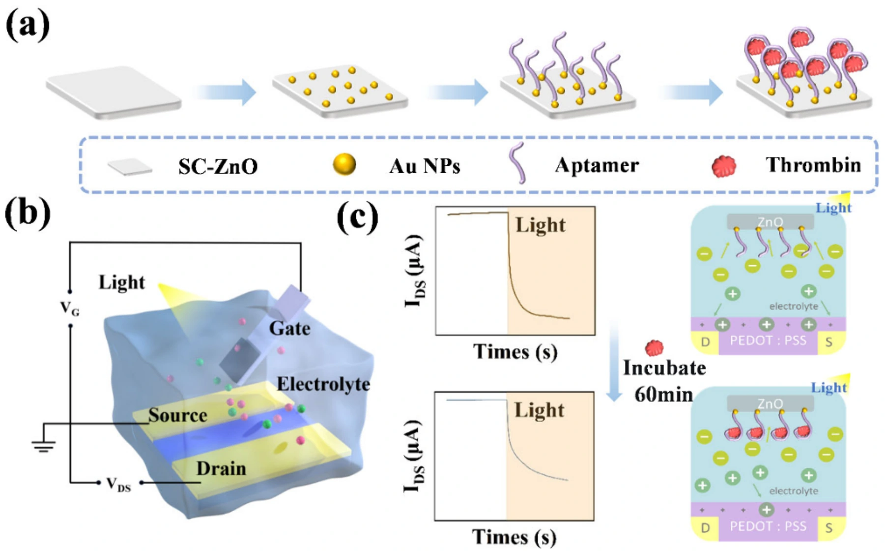
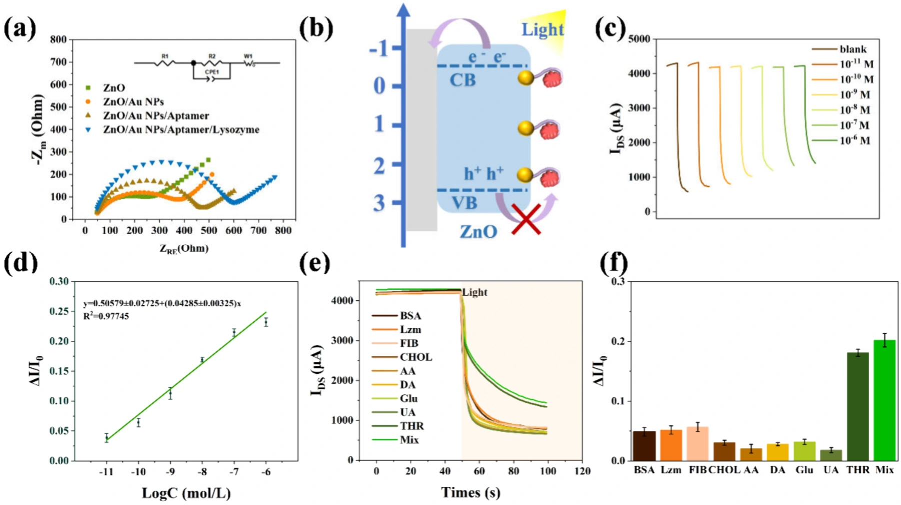
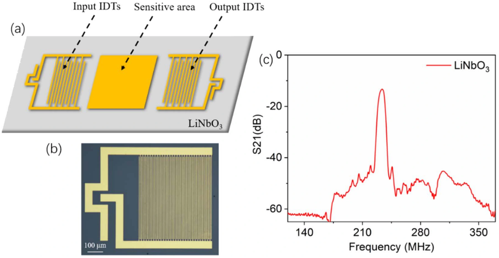
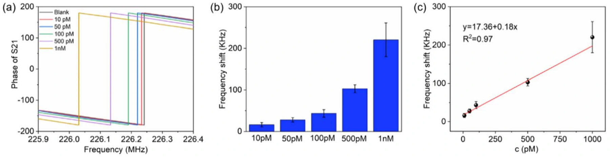

多孔有机单晶：兼顾电荷输运与气体接触
Chen et al. · Nano Research · 2025
在亲水 SiO₂ 表面构筑 OTS 疏水点阵，结合微间距升华生长 C8-BTBT。利用冷却过程中的热应力释放，形成孔位置、尺寸和密度可调的多孔有机单晶薄膜。
多孔薄膜晶体管对 NO₂ 与 NH₃ 呈现相反方向的电流响应；NO₂ 在 1–15 ppm 范围内的灵敏度为 25.01 %·ppm⁻¹，计算检测限为 2.14 ppb，体现微纳结构与气体识别的协同。


单晶 ZnO 光栅控：凝血酶识别与晶体管读出
Chen et al. · The Journal of Physical Chemistry Letters · 2025
以单晶 ZnO 为光敏栅极，在 Au 纳米粒子修饰表面固定凝血酶适配体，并与 PEDOT:PSS 有机电化学晶体管沟道耦合，将特异性分子结合转化为光栅控电流变化。
凝血酶结合降低栅极界面的光电化学响应，减小光照引起的漏极电流下降。器件在 10⁻¹¹–10⁻⁶ M 浓度范围内实现定量读出，检测限约为 2.35 pM，并开展干扰物选择性测试。


分子识别与声表面波：高灵敏汞离子检测
Sun et al. · Analytical Methods · 2023
在 LiNbO₃ 声表面波芯片的金敏感区，通过 Au–S 键固定 DNA 探针。胸腺嘧啶–Hg²⁺–胸腺嘧啶特异性结合引起器件响应频率变化，将分子识别转化为声学读出。
Hg²⁺ 线性检测范围为 10 pM–1 nM，检测限低至 6.3 pM；论文同时验证对多种干扰离子的选择性，为水质监测与便携式重金属检测提供器件路线。


相关论文
- Fabrication and application of porous organic single-crystal films in highly sensitive gas sensorsNano Research · 2025 · DOI: 10.26599/NR.2025.94907299
- ZnO Single-Crystal-Driven Organic Photoelectrochemical Transistors for Improved Human Thrombin DetectionThe Journal of Physical Chemistry Letters · 2025 · DOI: 10.1021/acs.jpclett.5c03358
- Highly sensitive surface acoustic wave biosensor for the detection of Hg²⁺ based on the thymine-Hg²⁺-thymine structureAnalytical Methods · 2023 · DOI: 10.1039/d3ay01188g